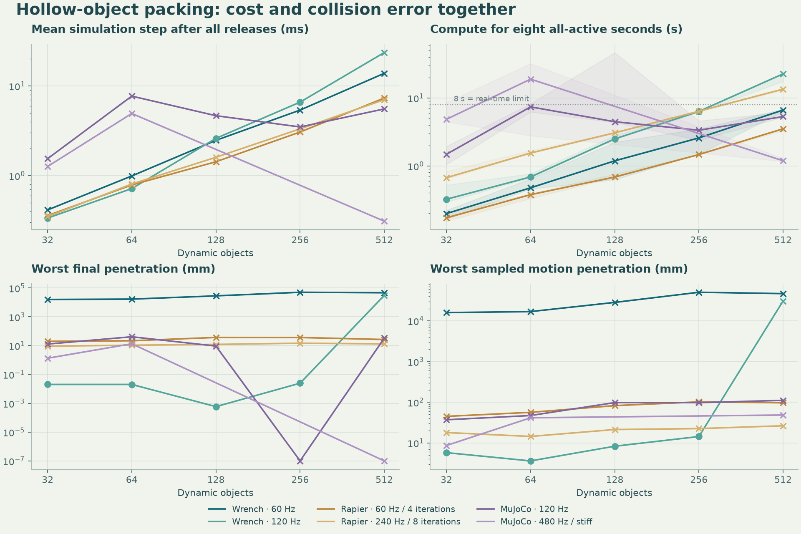

WRENCH TRANSPORT / COLLISION ACCURACY & SCALING
The empty space matters.
Cups, bowls, bottles, plates, rods, and small convex pieces drop into the same bin. Every engine receives the same hollow geometry. Inspect the motion, then compare the cost and the errors that remain.
A reconstruction of the task shown in Lucky Iyinbor’s collision-accuracy demo. Original meshes and solver settings were not supplied in the post; these objects and measurements are reproducible.
Drag to orbit; scroll to zoom. The replay uses measured 10 Hz pose samples with visual interpolation. It does not run a browser physics solver. Penetration values are measured at those samples, not inferred from the rendered image.
Speed belongs beside error.
All bodies stay awake. The main cost measure covers the eight simulated seconds after the last release. Final overlap, the largest sampled overlap during motion, sustained rest, and escapes are reported separately. Compound overlap means the deepest convex-part intersection.
| Configuration | Completed | All-active mean step | All-active compute | Final overlap | Motion overlap | Settled seeds | Escapes | Numerical warnings |
|---|
The scaling table aggregates all three seeds and measured repetitions at the selected size, even while the separate narrow-bin replay is selected. Overlap and escapes show the worst run; compute uses the median. The viewport shows one representative run.
What happens as the pile grows?

Check the empty space. Check the impact.
A body falling into a cup tests whether its cavity remains open. An analytic free-fall trajectory measures integration error. Drops onto a 4 mm elevated slab at 1, 10, and 30 m/s test missed collisions. Those small tests record every simulation step and distinguish crossing the slab’s interior from rolling off an edge.
| Configuration | Cup cavity | Slab 1 m/s | Slab 10 m/s | Slab 30 m/s | Free-fall error |
|---|
“Caught / edge exit” means no crossing through the slab’s interior was observed; it is not a guarantee for arbitrary collision geometry or speed. Free fall lasts 0.5 s; errors are relative to the analytic centre-of-mass trajectory.